02.04.2025
01 - Visual Uncertainty
this devlog
I started this project last year at the start of April 2024. I haven't been working nonstop for the past 10 months, but it's still been nearly a whole year and I feel like my progress hasn't been enough. Even though I consider the project's current state to be the best it's ever been, there are still too many of uncertainties. I want to settle on a visual style for my game, which will be the topic of today's devlog.
The majority of work I've done so far has been backend stuff - things like object pooling, events, and enemy management. This means the game is actually in a pretty playable state. In fact I released a prototype on Itch just a couple of weeks ago!
Since I'm making this game solo, I'm both the artist and the programmer. While I was coding, the assets in the project were mostly placeholders. With the game's systems and mechanics complete, I could finally start on the graphics. I was unsatisfied with pretty much everything. I wanted to completely overhaul the visuals of the game.
adding effects
I'll be completely honest - I'm not very skilled at pixel art. My workflow is obscenely slow and I have next to no experience with animations. These little explosion I created for the prototype are very short and simple. Yet they still took an embarrassingly large amount of effort.

Instead, I think it'd be more effective to add visual effects rather than only focusing on drawing better pixel art. It would (hopefully) be just as effective in making the game look nicer and more time efficient. This is something I was already kind of doing. The assets in the prototype are very basic, but all the extra little effects and animatons already added a lot to how the game looks.
I made a list of visual effects I wanted to try and create - interactive grass, moving foliage, etc. Many of these things required dealing with shaders, something I have literally zero experience with. Usually I'm a very avid planner. I like knowing exactly what I'm doing, why I'm doing it, and how everything connects together. Unfortunately I also tend to overthink things. In this case, since I was already going out of my comfort zone, I tried to focus only on the things I was immediately working on - ignoring the big picture as much as possible.
For the grass, I searched for some tutorials online and came across a fantastic video about interactive foliage. I followed the video, downloaded the package, and was eventually able to get things working (after a bit of tweaking and debugging).
Next, I wanted to add a tree. I remember seeing a tweet from a game by Gagonfe that had a really cool rippling effect for the tree's leaves. It made me want to try creating something similar. But first I had to draw a tree. The last time I made pixel art of a tree was years ago - and it turned out pretty lame.

This time, I followed a tutorial and was able to painstakingly draw a fluffy little tree. Not too bad.

For the leaves effect, I found this video that uses voronoi noise to displace a texture. Even if it's not exactly what I had in mind, I'm still pretty satisfied with how the tree leaves turned out.
Now that there were things as big as trees in the game, I also quickly added a transparency effect for when the player walks behind other objects. This was pretty easy to make, and looks nice too.
This is when I took a break to participate in the Pirate Software Game Jam 16 with a friend. You can play our submission here!
other games
And that's where I am now. There's still more that I'm interested in experimenting with - things like lighting and bloom to make objects glow, or some sort of water effect.
But every day I see other people posting pictures and videos of their game and I am blown away. Blown away by how sick all these games look.
It makes me want to improve the visuals of my own game. But how could I ever achieve that? Developing skill and ability takes time. I cannot become become a better pixel artist overnight. I cannot become a better animator overnight. What I can do, is rely on my own creativity.
visual direction
I want to make my game stand out - to not just be visually appealing, but visually memorable. I've spent a lot of time this past week thinking about my game's art direction. I haven't settled on anything quite yet, but there are a couple of things I have in mind that I'll try to focus on as I continue to work on my game's visuals.
A distinct artstyle.
The tree I drew is quite stylized due to the strong shapes and sillhouettes used. Future assets can be equally stylized which will add to how unique the game looks. The stylization should also make it easier for me to make assets following the same artstyle.
A strong color palette.
I don't have that much experience with making my own palette, so following some sort of theme should help a lot. My game could have a central color like the Persona games or just follow a specific color scheme like Hades.
A palpable atmosphere.
If a game's visuals can evoke feeling in the player, it becomes that much more interesting. Games like Eastward and Inscryption have an incredible sense of atmosphere, and their already good looking graphics are enhanced that much more. Honestly I don't know how I'll achieve this, but I will try nonetheless.
I'm aware this all seems really vague and ambiguous, but it's hard to put exactly what I'm envisioning into words. Will any of this actually help me make my game look better? I don't know, I can only hope that by writing these devlogs my ideas will become clearer down the line.
Until then, there's nothing else for me to do but to continue working on my game.
thanks for reading :)
Top